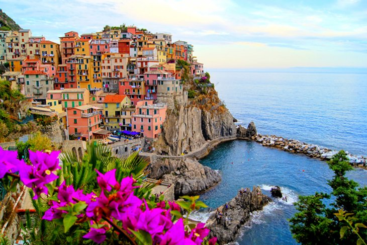
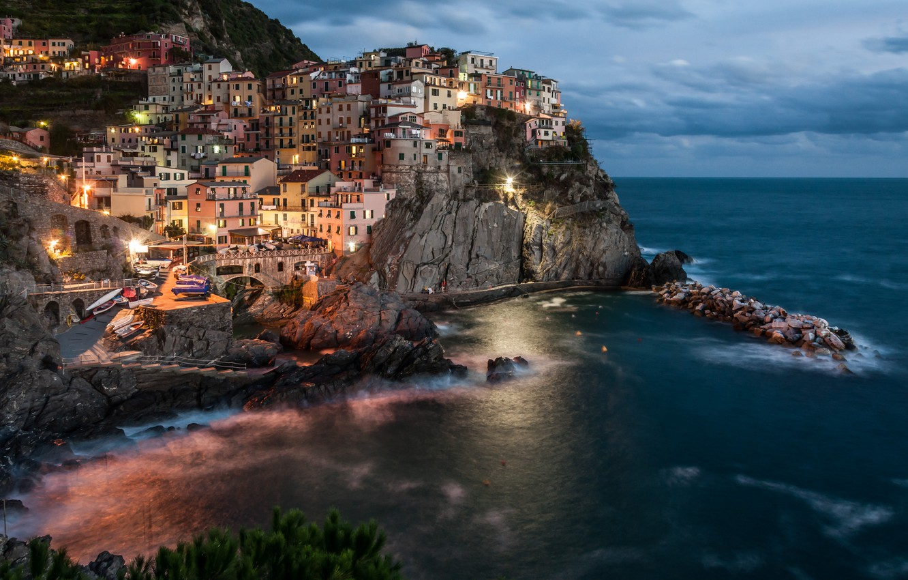
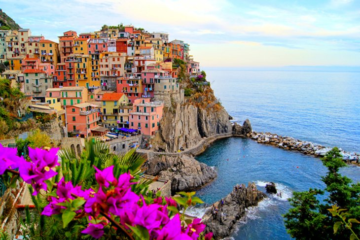
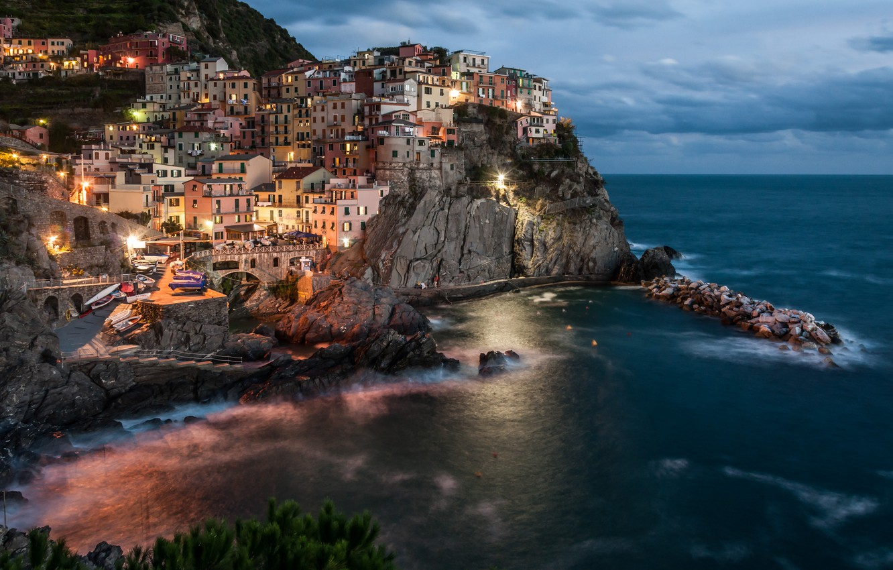

cinque terre ,rio maggiore italy
 



.What is figure Terre illustrious For? the attractive lineation, pretty beaches, colourful homes that square measure in-built the cliffs, nice hiking trails, gorgeous nature, and typical Italian culinary art and welcome. along these factors
square measure creating the region figure Terre one amongst the foremost in style regions in European nation.Overall, figure Terre is an upscale place to eat. A food dish prices 11-16 EUR, and customarily, edifice meals price between 25-35 EUR
together with a drink. Most restaurants open for lunch, shut for his or her cat sleep, then open once more around 7pm for dinner.The figure Terre, five towns, could be a string of 5 fishing villages alert high on the Italian geographic area within
the region Italian region, that till recently were connected solely by mule tracks and accessible solely by rail or water. Vernazza, figure TerreAn ancient system of footpaths remains the most effective thanks to visit the 5 villages: Monterosso,
Vernazza, Corniglia, Manarola and Riomaggiore. The figure Terre is noted for its beauty. Over centuries, folks have rigorously engineered terraces to cultivate grapes and olives on the rugged, steep landscape right up to the cliffs that overlook
the Mediterranean. The exciting views of harbours so much below the wild however hospitable lineation beside the medieval fortresses and plentiful vines and spirited colors create this a unforgettable vacation.